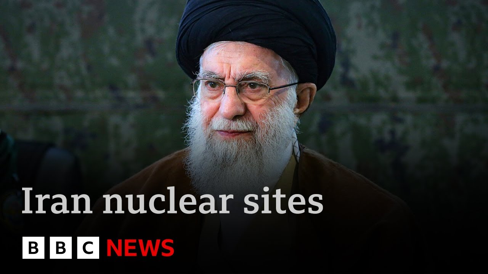

【BBC News 20250627 伊朗最高领袖称美国对核设施的打击毫无成效】
Summary: Iran's supreme leader Ayatollah Khamenei claims US strikes on nuclear facilities failed and asserts victory over Israel, calling Trump's actions mere showmanship. BBC correspondent Lees Du Sett reports from Tehran under restrictions, highlighting Iran's defiance, civilian suffering, and strained relations with the West amid a fragile ceasefire.
摘要： 伊朗最高领袖哈梅内伊宣称美国对核设施的打击失败，并断言对以色列的胜利，称特朗普的行动只是作秀。BBC记者利斯·杜·塞特在限制条件下从德黑兰报道，强调伊朗的抵抗、平民苦难以及与西方紧张的关系，同时停火脆弱。

⏱️ Estimated Reading Time: 4 min
📚 六级生词 📚 雅思生词 📚 托福生词 📚 专八生词 📚 SAT生词 📚 考研生词 📚 GRE生词 📚 高考生词
Iran's supreme leader Ayatollah Khamenei has made his first public appearance since the U.S. air strikes on nuclear facilities.
伊朗最高领袖哈梅内伊在美国空袭核设施后首次公开露面。
He said they had achieved nothing.
他表示这些打击毫无成效。
He claimed victory in the conflict with Israel.
他宣称在与以色列的冲突中取得胜利。
He said the strikes amounted to little more than showmanship by President Trump.
他表示这些打击不过是特朗普总统的作秀。
Our chief international correspondent, Lees Du Sett, is in the Iranian capital Tehran.
我们的首席国际记者利斯·杜·塞特目前在伊朗首都德黑兰。
She's being allowed to report from there on condition that none of her coverage is used on the BBC's Persian service, which broadcasts to the people of Iran.
她被允许在那里报道，条件是她的报道不得用于BBC波斯语频道，该频道向伊朗人民播报。
This law from the authorities applies to all international media agencies operating in Iran.
当局的这一规定适用于所有在伊朗运营的国际媒体机构。
Here is her report.
以下是她的报道。
Iran's state TV, the studio where the supreme leader's speeches are aired, but not today.
伊朗国家电视台，通常是最高领袖发表讲话的演播室，但今天没有。
Not after Israel attacked it.
在以色列袭击之后就没有了。
He's crossing the newsreader to flee, per desk devoured by fire.
他穿过新闻播报员逃离，办公桌被火焰吞噬。
Today, a fiery message of his own from the Ayatollah said to have sheltered in a bunker during the war.
今天，阿亚图拉本人发表了一番激烈的言论，据称他在战争期间躲在地堡里。
Iran, with this iron national resolve, rejects surrender.
伊朗以这种钢铁般的民族决心拒绝投降。
For a country like this, the idea of surrender is laughable to anyone who truly knows the Iranian nation.
对于这样的国家，投降的想法对任何真正了解伊朗民族的人来说都是可笑的。
For now, a fragile ceasefire.
目前，停火是脆弱的。
Tehran starts to look like itself.
德黑兰开始恢复原貌。
It's infamous traffic.
它那臭名昭著的交通。
It's beautiful bazaars.
它那美丽的集市。
Residents slowly returning to a city they left to escape the bombs.
居民们慢慢回到他们为躲避炸弹而离开的城市。
But for some, it's still a battle, just to breathe.
但对一些人来说，这仍然是一场战斗，仅仅是为了呼吸。
In this ward, there are civilians, not soldiers.
在这个病房里，是平民，不是士兵。
It as a shows his scars.
他展示了他的伤疤。
He was working in the transport department when the entrance to the notorious Evan prison was bombed.
当臭名昭著的埃文监狱入口被炸时，他正在交通部门工作。
Israel lies, saying they are only hitting military and nuclear sites.
以色列撒谎，说他们只打击军事和核设施。
They hit a prison.
他们袭击了一座监狱。
I was there.
我当时在那里。
I was hurt.
我受伤了。
And I'm amazed countries like England, France, the US and the UN don't condemn Israel.
令我惊讶的是，像英国、法国、美国和联合国这样的国家不谴责以色列。
The abandoned American embassy, a monument to Iran's troubled relationship with the West.
被遗弃的美国大使馆，是伊朗与西方关系紧张的纪念碑。
Accused of sponsoring terrorism, of trying to develop a nuclear bomb.
被指控支持恐怖主义，试图发展核弹。
Charges Tehran denies.
德黑兰否认这些指控。
But even inside this former embassy, a cafe, serving iced Americanos.
但即使在这座前大使馆内，也有一家咖啡馆供应冰美式咖啡。
Premier tells me he wants to see a better relationship between America and Iran.
总理告诉我，他希望看到美国和伊朗之间的关系改善。
So many Iranians do.
许多伊朗人也这样希望。
But in this dark time, there's still not much light.
但在这个黑暗的时刻，仍然没有多少光明。
The message in public was defiant.
公开的信息是挑衅的。
But this black-and-student symbolizes this dark moment in Iran.
但这名黑白相间的学生象征着伊朗的这一黑暗时刻。
The most difficult and dangerous decisions confronting the supreme leader.
最高领袖面临的最困难和最危险的决定。
The most fateful choices in his nearly 40 years in power.
他近40年执政生涯中最关键的选择。
A new, uncertain chapter in an old, long-standing war.
一场古老而持久的战争中的一个新的、不确定的篇章。
He's to set BBC News, Tehran.
这里是BBC新闻，德黑兰。